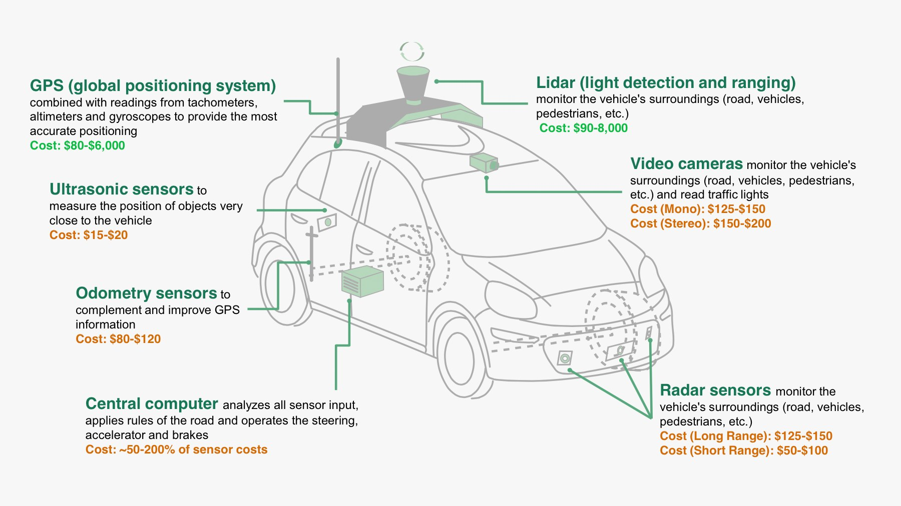
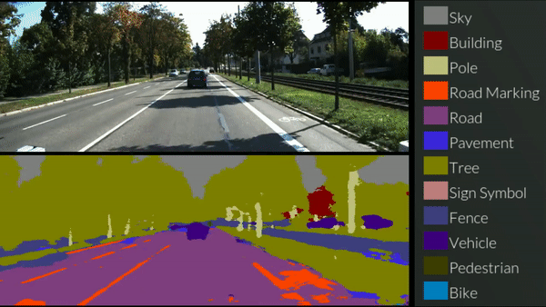

How can a computer drive a car (driveless car) ???
Inputs, computations and outputs
The magic of a driveless car (or a cruise missle flying towards its
intended target) are accomplished by:
Input devices that provide data for the computer to make
decisions (based on complex calculations on the input)
Output devices that can carry out the decision of the computation
made by the computer
Let's take the example of a dirveless car:
Input sensors
(radar, lidar, infra-red sensors, ect) provides
input data on the surrounding to
the onboard computer:

The computer then perform (still research in 2019) a series of
convolution steps on the
data (goolge
"semantic segmentation" to learn more)
to sort out the input data into coherent parts.
The result would look something like this:

Based on the input, the
"driving program"compute:
What is the best speed for
the vehicle
What is the best
direction
The output devices will receive the
results computed by the
"driving program"
and translate them into
car actions:
accelerate or decelerate
to the target speed
turn the driving wheel and
by how much
to make the car go into the desired
direction
Peripheral (input/output) devices
Although the peripheral devices
are extremely important for the function
of a system (the sensors in a driveless car - without the sensors,
the car is blind !!), they are
not considered as
part of the
computer system
In CS255, we study the
computer system: the CPU and the memory.
All the fancy peripherals (too many of them), will not come up much
in this course.